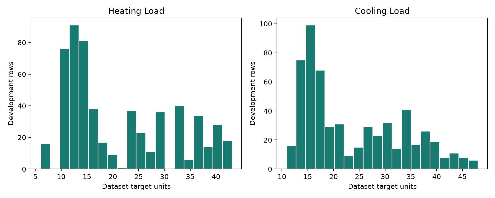
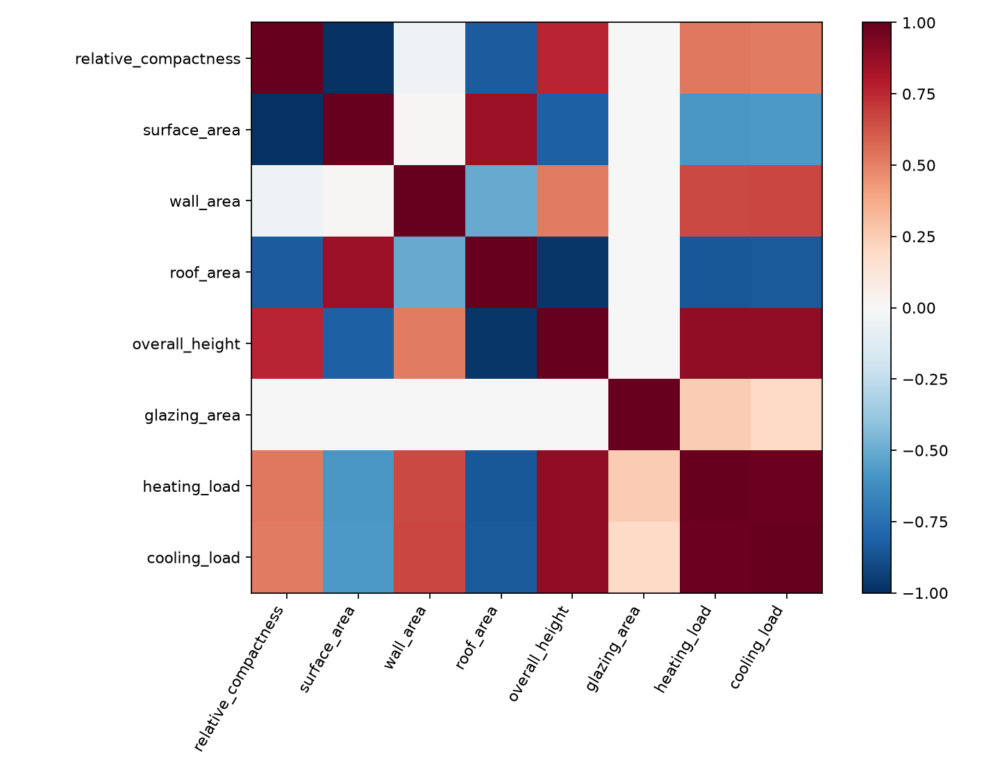
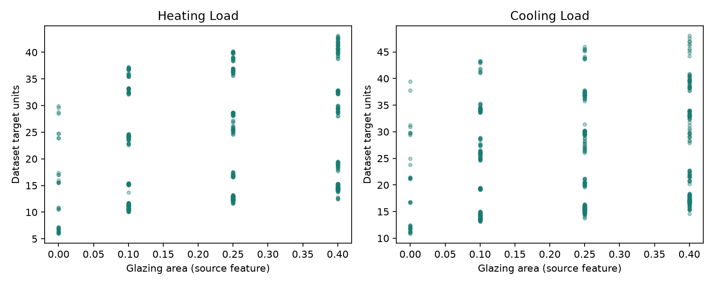
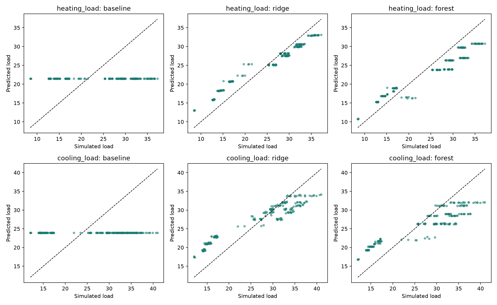

Mean baseline
A constant training-mean prediction provides the simple comparator. It ignores every design input and minimises squared training error.
EVERY SHAPE HAS A DEMAND.
Walls. Windows. Height. A few design choices, two energy loads—and a question about what machines can learn.
Step inside the explorer↗Follow the research ↓Heating load describes its heating requirement. Our models estimate the dataset’s simulated value from design inputs.
Illustration for explanation only · not a dataset shape or model output
THE EXPERIMENTTrain on nine shapes.
Test on three unfamiliar ones.
THE RESEARCH REPORT
Start with the findings, then explore the question, methods and evidence.
Interactive results are loading; the full report is available below.
How accurately can Ridge Regression and Random Forest predict simulated heating and cooling loads for building shapes absent from training, compared with a training-mean baseline? Predictions use design information available before running the energy simulation. Each row is one simulated building configuration.
The UCI Energy Efficiency dataset contains 768 configurations, eight design inputs and two targets, generated from 12 underlying shapes. Inputs describe compactness, surface, wall and roof areas, height, orientation, glazing area and glazing distribution. These are simulations, not household measurements.
Verified 768 configurations, eight predictors, two targets, 12 geometry groups of 64 rows, zero missing values and zero duplicate source rows.
The intended use is a fast estimate from design specifications before running an energy simulation. Only X1–X8 are available to the predictor. Neither load target, the row ID nor the shape ID enters a model. A useful result is lower held-out error than the mean baseline, with failures and scope stated explicitly; this is not an energy-bill forecast.
| Source column | Meaning | Treatment | Development range / codes |
|---|---|---|---|
| X1 | Relative compactness | Numerical | 0.64 to 0.98 |
| X2 | Surface area | Numerical | 514.5 to 784 |
| X3 | Wall area | Numerical | 245 to 416.5 |
| X4 | Roof area | Numerical | 110.25 to 220.5 |
| X5 | Overall height | Numerical | 3.5 to 7 |
| X6 | Orientation | Category | 2, 3, 4, 5 |
| X7 | Glazing area | Numerical | 0 to 0.4 |
| X8 | Glazing distribution | Category | 0, 1, 2, 3, 4, 5 |
| Y1 | Heating load | Target | 6.01 to 43.1 |
| Y2 | Cooling load | Target | 10.9 to 48.03 |
Access: the public Excel file is included with attribution under CC BY 4.0, and the training script also supplies the UCI download route. The meaningful source columns have no missing values and no exact duplicate rows. However, repeated configurations of each geometry are related observations: the 768 rows are not 768 independent shapes. Each of the 12 verified geometry groups contains 64 configurations. All eight input features are retained; no feature selection or target transformation is performed.
Reading the development plots: relative compactness and surface area have correlation -0.990; geometry features therefore contain overlapping information, motivating a regularised linear comparison. The glazing scatter contains different loads at the same glazing value, so glazing alone cannot identify the target. The histograms describe target coverage, not evidence of real-world representativeness.
Target units are shown as dataset units because the UCI variable table does not specify units. Orientation and glazing distribution retain the source's numerical category codes.

The distributions describe the development data only; the final test targets did not guide model selection.

Geometry variables are related. Ridge regularisation stabilises the linear comparison, but correlated inputs also limit interpretations of individual coefficients.

The glazing plots show associations across configurations, rather than isolated causal effects.
Preprocessing is chosen for the data and model, rather than to maximise a final test score.
Separate regressors predict heating and cooling loads from the same eight design inputs. This keeps the target-specific errors visible and prevents either known load from becoming a predictor.
A constant training-mean prediction provides the simple comparator. It ignores every design input and minimises squared training error.
Minimises squared residuals plus an L2 coefficient penalty. Regularisation is appropriate for the strongly related geometry inputs, but the additive model cannot directly capture arbitrary interactions.
Averages 300 regression trees to model nonlinear patterns and interactions. Its flexibility is useful, but trees may generalise poorly beyond observed feature coverage.
Ridge objective: sum((y − ŷ)²) + α × sum(coefficient²). The intercept is not penalised. Larger alpha shrinks coefficients more strongly. These objectives motivate the comparison; they do not guarantee a ranking in advance.
Development: 576 rows from shapes [1, 2, 3, 4, 5, 6, 7, 8, 11]. Final test: 192 rows from shapes [0, 9, 10]. Seed 42.
A random row split could place different glazing/orientation configurations of the same geometry on both sides. That would evaluate unfamiliar configurations of familiar shapes, whereas the question concerns unfamiliar shapes. Grouping by the first five geometry columns gives 12 distinct shapes. The split is selected from geometry groups with seed 42, without using load values; each complete group stays together.
With nine development shapes, each of three validation folds holds out three shapes (192 configurations) and fits on six shapes (384 configurations). After tuning, the chosen estimator is refitted on all 576 development rows. Three untouched test shapes provide 192 final predictions per target and model. The split and search grid were defined before score comparison; later error analysis does not change them.
| Target | Ridge alpha | Forest depth | Minimum leaf size | Trees |
|---|---|---|---|---|
| heating load | 100 | 5 | 1 | 300 |
| cooling load | 100 | 5 | 1 | 300 |
GridSearchCV evaluates all four Ridge settings and nine forest settings per target. The setting with minimum mean validation MAE is chosen within each model family. Ridge’s best alpha is at the largest value in the predefined grid; this identifies the best tested setting, not a global optimum. The grid was not expanded after seeing final test results.
MAE = mean(|prediction − simulated value|); RMSE = sqrt(mean((prediction − simulated value)²)). MAE is the primary metric because it gives an interpretable average absolute error in target units. RMSE complements it by penalising large errors more strongly. These are regression errors, not percentage accuracy. Row-averaged MAE gives each configuration equal weight; all test shapes have 64 rows, so it also equals the equally weighted mean of the three shape MAEs.
The mean baseline is the constant that minimises squared training error, not absolute training error (whose optimal constant is a median). It remains the predefined simple comparator for both MAE and RMSE. No statistical significance test or calibrated prediction interval is claimed.
Prespecified search: Ridge alpha = 0.1, 1, 10, 100. Forest = 300 trees; maximum depth unlimited, 5 or 10; minimum leaf size 1, 2 or 4. All candidates are retained in the search CSVs. All learned transformations are fitted inside pipelines.
| Target | Model | Test MAE | Test RMSE | Validation MAE ± fold SD |
|---|---|---|---|---|
| heating load | Mean baseline | 8.268 | 8.878 | 9.837 ± 1.097 |
| heating load | Ridge | 2.464 | 2.754 | 3.648 ± 0.958 |
| heating load | Random Forest | 3.330 | 3.607 | 5.486 ± 3.185 |
| cooling load | Mean baseline | 8.555 | 9.093 | 8.950 ± 0.774 |
| cooling load | Ridge | 3.527 | 4.133 | 3.776 ± 1.313 |
| cooling load | Random Forest | 4.343 | 4.815 | 4.645 ± 2.840 |
For heating load, Ridge's MAE is 2.464 versus 8.268 for the baseline: a 70.2% reduction in MAE. For cooling load, Ridge's MAE is 3.527 versus 8.555 for the baseline: a 58.8% reduction in MAE.
| Target | Ridge MAE reduction vs baseline | Forest MAE minus Ridge MAE |
|---|---|---|
| heating load | 70.2% | 0.866 |
| cooling load | 58.8% | 0.816 |
Both learned methods beat the constant baseline on both targets: the design inputs carry useful predictive information for this held-out split. Ridge’s lower aggregate test error shows that extra model complexity is not automatically helpful. This is compatible with a regularised additive relationship transferring more reliably across these shapes, but the experiment does not isolate that mechanism. The forest has much greater fold-to-fold validation variation, showing sensitivity to which shapes are absent from training.
For Ridge, cooling error exceeds heating error in the source target units. Without normalising the target scales, this does not prove cooling is intrinsically harder. RMSE exceeds MAE for every model, indicating uneven error magnitudes; the representative failures below show why reporting only an average is insufficient.
Validation values describe the folds used for tuning; they are not an independent estimate. Their standard deviation is descriptive variation across three folds, not a confidence interval.

The dashed line marks perfect predictions. Distances from it show error; flat baseline predictions demonstrate the comparison without design inputs.
The following coefficients come from Ridge with its already selected alpha (100), refitted only on the nine development shapes. The refitted predictions match the saved test predictions within numerical tolerance. This is a descriptive analysis of the fixed model, not another tuning experiment.
| Numerical input | Heating coefficient | Cooling coefficient |
|---|---|---|
| relative compactness | -0.176 | -0.233 |
| surface area | -0.818 | -0.650 |
| wall area | +3.069 | +2.821 |
| roof area | -2.289 | -2.016 |
| overall height | +4.216 | +4.079 |
| glazing area | +2.142 | +1.603 |
A numerical coefficient describes the predicted target change for a one-development-standard-deviation increase in that input, holding the encoded inputs fixed. Signs show direction within the fitted model; magnitudes are not percentages. Categorical indicator coefficients are exported separately in the complete coefficient CSV and should not be ranked directly against standardised numerical coefficients.
For heating load, the largest absolute standardised numerical coefficient is overall height (+4.216). This identifies a strong conditional association in this fitted model, not the most causally important design feature.
For cooling load, the largest absolute standardised numerical coefficient is overall height (+4.079). This identifies a strong conditional association in this fitted model, not the most causally important design feature.
Why interpretation needs care: geometry inputs are highly correlated, so their coefficients share credit and a hypothetical change in one input with every other geometry value fixed may not describe a physically possible building. Regularisation and the training shapes affect the values. No ablation or permutation-importance experiment was performed, so we do not claim a unique importance ranking. Download every coefficient.
Choose a design, then compare its simulated load with a model prediction. These are saved test results for observed configurations.
Signed error = prediction − simulated load. Positive means overprediction.
Ranking covers every held-out configuration, irrespective of the configuration filters above.
| Row | Shape | Simulated | Predicted | Absolute error |
|---|
Swipe tables sideways on a phone to see every column.
| Target | Model | Shape | MAE |
|---|---|---|---|
| heating load | Mean baseline | 0 | 7.186 |
| heating load | Mean baseline | 9 | 7.358 |
| heating load | Mean baseline | 10 | 10.259 |
| heating load | Ridge | 0 | 3.694 |
| heating load | Ridge | 9 | 1.711 |
| heating load | Ridge | 10 | 1.986 |
| heating load | Random Forest | 0 | 2.336 |
| heating load | Random Forest | 9 | 2.556 |
| heating load | Random Forest | 10 | 5.098 |
| cooling load | Mean baseline | 0 | 8.653 |
| cooling load | Mean baseline | 9 | 7.088 |
| cooling load | Mean baseline | 10 | 9.923 |
| cooling load | Ridge | 0 | 5.606 |
| cooling load | Ridge | 9 | 2.567 |
| cooling load | Ridge | 10 | 2.409 |
| cooling load | Random Forest | 0 | 4.975 |
| cooling load | Random Forest | 9 | 2.895 |
| cooling load | Random Forest | 10 | 5.159 |
Ridge wins in aggregate, but not on every shape. On shape 0, the forest’s heating MAE is 2.336 versus Ridge’s 3.694; its cooling MAE is 4.975 versus Ridge’s 5.606. On shape 10, forest heating MAE rises to 5.098 while Ridge achieves 1.986. Thus the aggregate ranking hides a tradeoff across shapes. We cannot conclude that Ridge dominates every unfamiliar geometry.
Shape 0 has compactness 0.62 and surface area 808.5, while development compactness spans 0.64–0.98 and surface area 514.5–784. These two inputs lie outside development coverage. This identifies a concrete extrapolation challenge for that shape, though it does not prove the cause of any individual error.
| Target | Model | Row | Shape | Simulated | Predicted | Signed error | Absolute error | Orientation / glazing / distribution |
|---|---|---|---|---|---|---|---|---|
| heating load | Ridge | 572 | 0 | 15.090 | 20.817 | +5.727 | 5.727 | 2 / 0.4 / 1 |
| heating load | Random Forest | 293 | 10 | 33.480 | 26.947 | -6.533 | 6.533 | 3 / 0.25 / 1 |
| cooling load | Ridge | 671 | 0 | 16.000 | 22.959 | +6.959 | 6.959 | 5 / 0.4 / 3 |
| cooling load | Random Forest | 535 | 10 | 40.990 | 32.076 | -8.914 | 8.914 | 5 / 0.4 / 1 |
These cases are selected by the largest absolute error for each learned model and target, not hand-picked to favour a model. Positive signed error means overprediction; negative means underprediction. Row IDs are zero-based. The explorer permits comparison with other configurations, and the repository includes all 192 test configurations, not just these cases. The cases show where estimates fail; they do not establish causal explanations or justify retraining against the test set.
This small simulation dataset includes only 12 shapes and three final test shapes. Shape-level results can differ substantially, and configuration rows within a shape are related. The study does not validate performance on real buildings, other simulation settings or substantially different geometries. Feature associations do not establish causation. High performance here does not establish readiness for architectural decisions.
A future study could predefine an outer leave-one-shape-out evaluation to assess variation across more held-out geometries, and evaluate independently collected real-building data. Those are proposed extensions, not experiments performed here. We did not compare random-row and grouped evaluation, run ablations or construct prediction intervals. The complete experiment inventory contains the two targets, three methods, and all predefined tuning candidates.
The test results are for the saved split. Repeating seeds until the score improves would weaken this evaluation. Error inspection is descriptive and has not been used to retune the models.
For heating load, Ridge's MAE is 2.464 versus 8.268 for the baseline: a 70.2% reduction in MAE. For cooling load, Ridge's MAE is 3.527 versus 8.555 for the baseline: a 58.8% reduction in MAE. Therefore, design-based prediction improves on the predefined constant comparator for these unseen test shapes, with Ridge the best aggregate method among those tested. The per-shape exceptions and limited simulation coverage prevent a claim of universal superiority or real-building reliability.
The research question is answered within the saved simulation split: the design inputs improve on a constant prediction for the three unseen geometries. The exceptions by shape are part of the conclusion, not discarded failures.
Download the repository, create a Python virtual environment, install requirements-lock.txt, run python src/train.py, then serve docs/ using Python's HTTP server. The README gives complete commands. Results include dataset SHA-256, row and fold assignments, hyperparameters, search scores, predictions and package versions.
UCI dataset · Dataset DOI · Download evaluation summary · Download test predictions
Source repository: Rokkala-Mithesh-25110274 · Download code, notebook, dataset and full results · Setup and run instructions
The evidence download is a self-contained copy of the analysis materials. It is available directly from the website so assessment does not depend on access to another service. The repository must contain the same source, inputs, results and website files.
python -m venv .venv
# Activate .venv using your operating system
python -m pip install -r requirements.txt
python src/train.py
python src/verify_results.py
python -m http.server 8000 --directory docsThe training command regenerates predictions, figures, the report and its downloadable evidence. The verification command independently checks metrics against predictions, predictions against test targets, grouping, fold separation and data provenance. The notebook reads saved artifacts and documents the same reasoning; training remains in a single source script to avoid hidden notebook state.
Python, pandas, NumPy, scikit-learn, Matplotlib and openpyxl implement the analysis. HTML, CSS and JavaScript implement the static website. GitHub Pages is the intended hosting route; localhost is only a local preview.
Dataset: Tsanas, A. & Xifara, A. (2012). Energy Efficiency. UCI Machine Learning Repository. CC BY 4.0. Original study: “Accurate quantitative estimation of energy performance of residential buildings using statistical machine learning tools,” Energy and Buildings 49 (2012).
AI-use disclosure: ChatGPT/Codex assisted with the research plan, implementation, website writing, plots, debugging and error summaries. The supplied workflow was executed and its saved metrics checked against row-level predictions. These automated checks do not establish that the student independently validated the code or understands it; that review remains the student’s responsibility. The data and original study are external sources, not AI-generated observations.
Software references: scikit-learn documentation, pandas documentation, NumPy documentation and Matplotlib documentation.
Full citations and software sources · Detailed AI-use disclosure